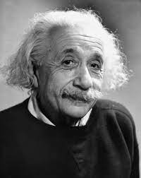
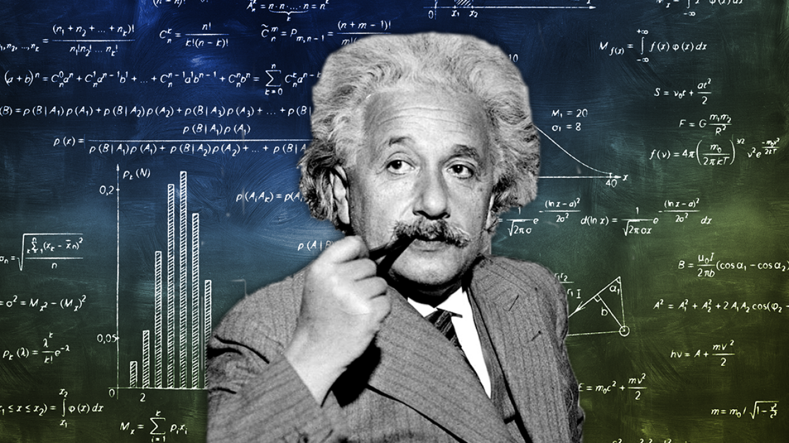
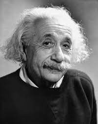
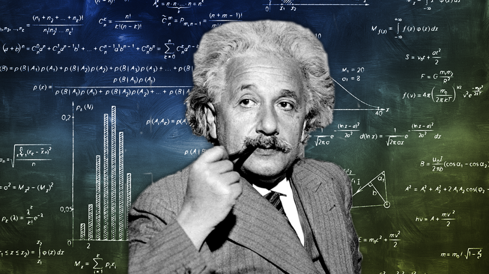

Biography
Born : 14 March 1879
Education : University of Zurich
Known for : General relativity Special relativity
Spouses : Mileva Marić
Albert Einstein was a German-born theoretical physicist, widely held to be one of the greatest and most influential scientists of all time. Best known for developing the theory of relativity, he also made important contributions to quantum mechanics, and was thus a central figure in the revolutionary reshaping of the scientific understanding of nature that modern physics accomplished in the first decades of the twentieth century. His mass–energy equivalence formula E = mc2, which arises from relativity theory, has been called "the world's most famous equation". He received the 1921 Nobel Prize in Physics "for his services to theoretical physics, and especially for his discovery of the law of the photoelectric effect", a pivotal step in the development of quantum theory. His work is also known for its influence on the philosophy of science. In a 1999 poll of 130 leading physicists worldwide by the British journal Physics World, Einstein was ranked the greatest physicist of all time.His intellectual achievements and originality have made the word Einstein broadly synonymous with genius figure in the revolutionary reshaping of the scientific understanding of nature that modern physics accomplished in the first decades of the twentieth century.His mass–energy equivalence formula E = mc2, which arises from relativity theory, has been called "the world's most famous equation". He received the 1921 Nobel Prize in Physics "for his services to theoretical physics, and especially for his discovery of the law of the photoelectric effect", a pivotal step in the development of quantum theory. His work is also known for its influence on the philosophy of science. In a 1999 poll of 130 leading physicists worldwide by the British journal Physics World, Einstein was ranked the greatest physicist of all time. His intellectual achievements and originality have made the word Einstein broadly synonymous with genius figure in the revolutionary reshaping of the scientific understanding of nature that modern physics accomplished in the first decades of the twentieth century. His mass–energy equivalence formula E = mc2, which arises from relativity theory, has been called "the world's most famous equation". He received the 1921 Nobel Prize in Physics "for his services to theoretical physics, and especially for his discovery of the law of the photoelectric effect", a pivotal step in the development of quantum theory. His work is also known for its influence on the philosophy of science.In a 1999 poll of 130 leading physicists worldwide by the British journal Physics World, Einstein was ranked the greatest physicist of all time. His intellectual achievements and originality have made the word Einstein broadly synonymous with genius
Publications
Publication 1

Publication 2

Publication 3

Publication 4

Awards and Honors
Einstein received numerous awards and honors, and in 1922, he was awarded the 1921 Nobel Prize in Physics "for his services to Theoretical Physics, and especially for his discovery of the law of the photoelectric effect". None of the nominations in 1921 met the criteria set by Alfred Nobel, so the 1921 prize was carried forward and awarded to Einstein in 1922. Einsteinium, one of the synthetic elements in the periodic table, was named in his honor.
Einstein, Albert (1923) [First published 1923, in English 1967]. Written at Gothenburg. Grundgedanken und Probleme der Relativitätstheorie [Fundamental Ideas and Problems of the Theory of Relativity] (Speech). Lecture delivered to the Nordic Assembly of Naturalists at Gothenburg, 11 July 1923. Nobel Lectures, Physics 1901–1921 (in German and English). Stockholm: Nobelprice.org (published 3 February 2015) – via Nobel Media AB 2014.
Einstein, Albert (1924) [Published 10 July 1924]. "Quantentheorie des einatomigen idealen Gases" [Quantum theory of monatomic ideal gases]. Sitzungsberichte der Preussischen Akademie der Wissenschaften, Physikalisch-Mathematische Klasse (in German): 261–267. Archived from the original (Online page images) on 14 October 2016. Retrieved 26 February 2015 – via ECHO, Cultural Heritage Online, Max Planck Institute for the History of Science. First of a series of papers on this topic.
Einstein became one of the most famous scientific celebrities after the confirmation of his general theory of relativity in 1919. Although most of the public had little understanding of his work, he was widely recognized and admired. In the period before World War II, The New Yorker published a vignette in their "The Talk of the Town" feature saying that Einstein was so well known in America that he would be stopped on the street by people wanting him to explain "that theory". Eventually he came to cope with unwanted enquirers by pretending to be someone else: "Pardon me, sorry! Always I am mistaken for Professor Einstein." Einstein has been the subject of or inspiration for many novels, films, plays, and works of music.[313] He is a favorite model for depictions of absent-minded professors; his expressive face and distinctive hairstyle have been widely copied and exaggerated. Time magazine's Frederic Golden wrote that Einstein was "a cartoonist's dream come true". Many popular quotations are often misattributed to him. For example, it is often claimed, erroneously, that he said, "The definition of insanity is doing the same thing over and over and expecting different results.
Einstein, Albert (1923) [First published 1923, in English 1967]. Written at Gothenburg. Grundgedanken und Probleme der Relativitätstheorie [Fundamental Ideas and Problems of the Theory of Relativity] (Speech). Lecture delivered to the Nordic Assembly of Naturalists at Gothenburg, 11 July 1923. Nobel Lectures, Physics 1901–1921 (in German and English). Stockholm: Nobelprice.org (published 3 February 2015) – via Nobel Media AB 2014.
Einstein, Albert (1924) [Published 10 July 1924]. "Quantentheorie des einatomigen idealen Gases" [Quantum theory of monatomic ideal gases]. Sitzungsberichte der Preussischen Akademie der Wissenschaften, Physikalisch-Mathematische Klasse (in German): 261–267. Archived from the original (Online page images) on 14 October 2016. Retrieved 26 February 2015 – via ECHO, Cultural Heritage Online, Max Planck Institute for the History of Science. First of a series of papers on this topic.
Einstein became one of the most famous scientific celebrities after the confirmation of his general theory of relativity in Although most of the public had little understanding of his work, he was widely recognized and admired. In the period before World War II, The New Yorker published a vignette in their "The Talk of the Town" feature saying that Einstein was so well known in America that he would be stopped on the street by people wanting him to explain "that theory". Eventually he came to cope with unwanted enquirers by pretending to be someone else: "Pardon me, sorry! Always I am mistaken for Professor Einstein." Einstein has been the subject of or inspiration for many novels, films, plays, and works of music. He is a favorite model for depictions of absent-minded professors; his expressive face and distinctive hairstyle have been widely copied and exaggerated. Time magazine's Frederic Golden wrote that Einstein was "a cartoonist's dream come true".Many popular quotations are often misattributed to him. For example, it is often claimed, erroneously, that he said, "The definition of insanity is doing the same thing over and over and expecting different results.
Collections


 





Hobbies
Albert Einstein, one of the greatest minds in history, had a set of hobbies that perfectly reflected his multifaceted personality. Beyond his groundbreaking work in science and mathematics, Einstein found solace in sailing, where he could harness the power of the wind and navigate the open waters. His love for the violin was well-known, and he often turned to music as a means of relaxation and creative expression. Einstein's passion for figuring out complex problems extended beyond the realm of physics; he relished intellectual challenges in all aspects of life. These diverse hobbies not only provided moments of respite from his scientific pursuits but also showcased his insatiable curiosity and his ability to find inspiration in various forms of art and exploration..Blogs
Introduction: With his ground-breaking theories and ground-breaking concepts, Albert Einstein, a name that is synonymous with genius, transformed the course of physics for all time. In this blog, we will examine the achievements of this outstanding scientist's career and the lasting effects he has had on the field of science. Early Years and Education: Albert Einstein, who was born on March 14, 1879, in Ulm, Germany, showed early interest in and ability for physics and mathematics. His family's relocation to Munich in 1880 signaled the start of the path that would take him to scientific glory. After enrolling at the Swiss Federal Polytechnic in Zurich, Einstein received his certification as a physics and mathematics instructor there in 1900.
The Annus Mirabilis Papers: Four seminal works by Albert Einstein were released in 1905 and irrevocably altered the course of science. The photoelectric effect, Brownian motion, special relativity, and the equivalence of mass and energy—famously encapsulated in the equation E=mc2—were all addressed in these works. Due to his contributions to theoretical physics, Einstein became a pioneer in the subject. The General Theory of Relativity, Einstein's most well-known piece of writing, was released in 1915. It provided a fresh perspective on the world by introducing the idea that gravity is caused by the curvature of spacetime. Einstein's reputation as a scientific giant was cemented by the observational confirmation of the theory's predictions, such as the bending of light around enormous objects.
Nobel Prize and Beyond: It is surprising that Einstein received the Nobel Prize in physics in 1921 for his work on the photoelectric effect rather than for his theory of relativity. Despite being acknowledged, Einstein persisted in pushing the limits of physics and supported peace and civil rights. Later Life and Legacy: To flee the developing anti-Semitism in Nazi Germany, Einstein immigrated to the United States in 1933. He took a job at Princeton, New Jersey's Institute for Advanced Study, where he worked for the rest of his academic life. Einstein continued to write significant articles and interact with other scientists throughout his lifetime.
In summary, Albert Einstein's life and contributions serve as a tribute to the mind's amazing capacity. He made significant contributions to science, and his influence on the world is felt well beyond his time. Scientists, intellectuals, and inquisitive minds all around the world continue to be inspired by Einstein's legacy, serving as a constant reminder that through hard work and ingenuity, we may discover the mysteries of the cosmos.